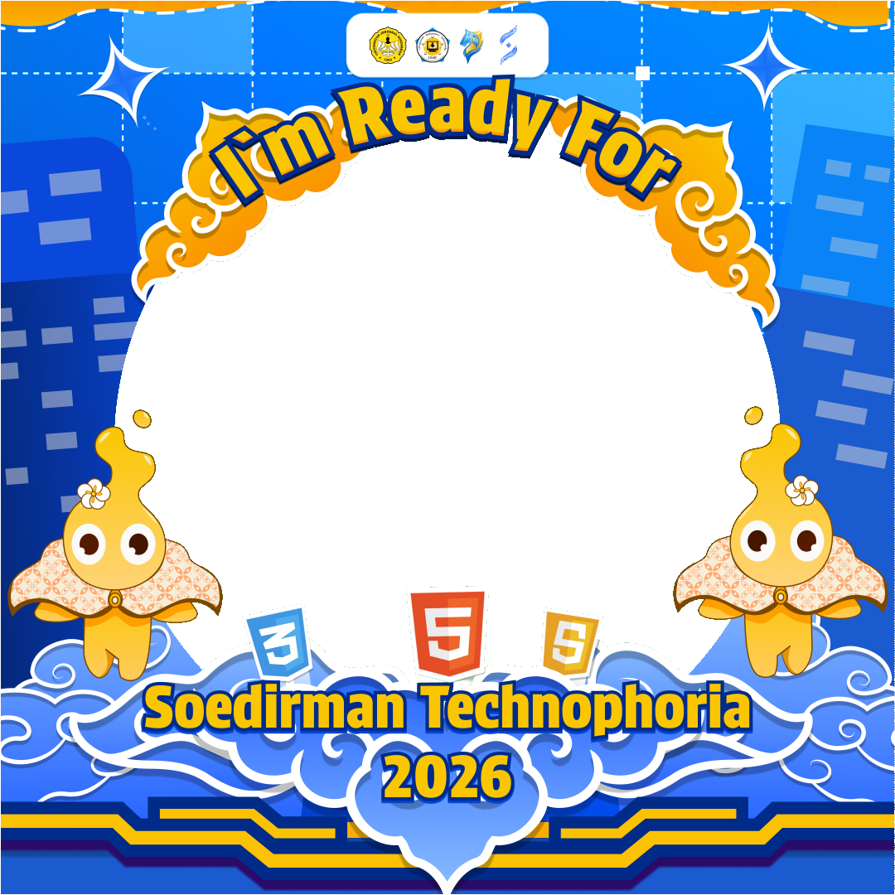

Open Source Web App
Twibbon Generator
Created by Adam

Skala Foto
100%
Petunjuk : Klik dan tahan foto di atas untuk menggeser posisi.
Created by Adam

Petunjuk : Klik dan tahan foto di atas untuk menggeser posisi.